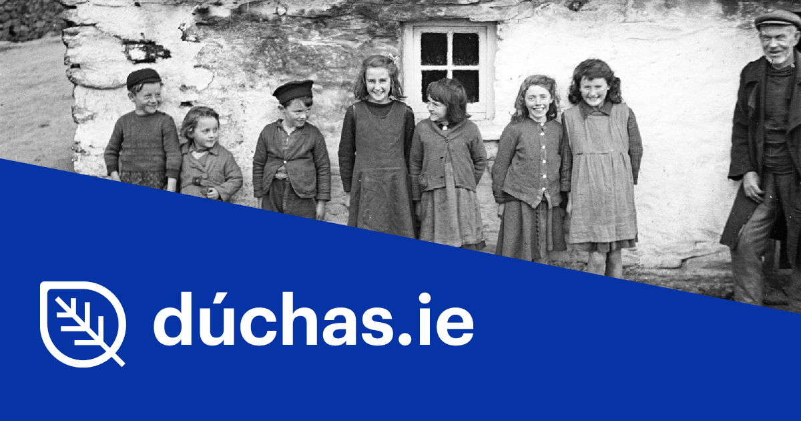
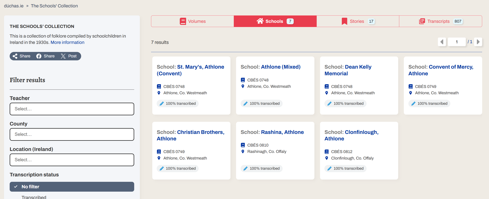
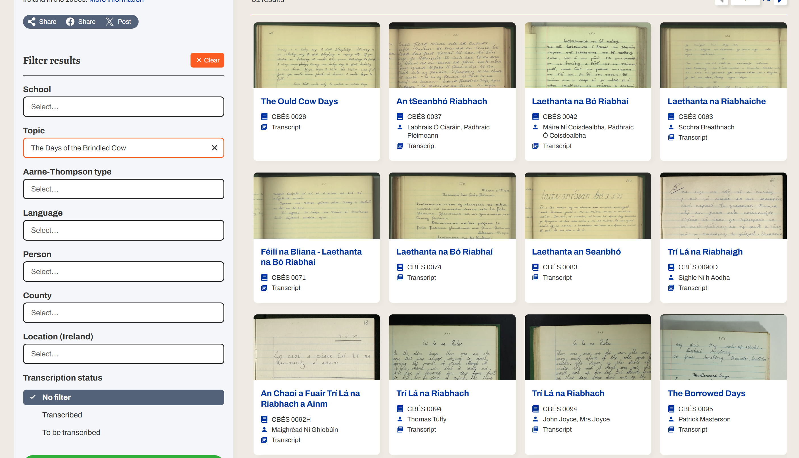
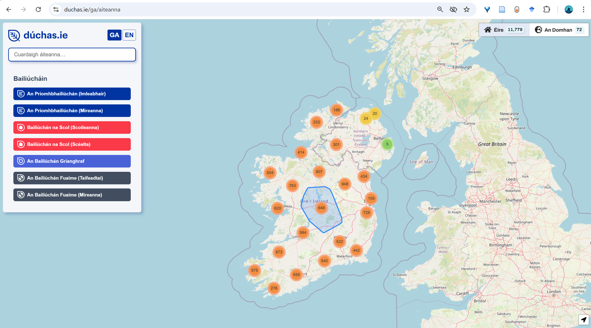

This project involves working with national folklore archives of Ireland which are accessible online via the website Dúchas. This blog briefly outlines the mission of Dúchas.ie and suitability of one of its collections for use in the Ar Scáth a Chéile project.
Ireland’s National Folklore Collection (NFC) aims to collect, preserve and disseminate material from the Irish oral tradition. Among the archives, ‘The School’s Collection’ consists of approximately 740,000 pages of folklore compiled by 50,000 primary schoolchildren in the 1930s (National Folklore Collection, 2025). The scheme was initiated by the Irish Folklore Commission, and relied heavily on the cooperation of Irish National Teachers who enlisted their students to record folk tales and legends from their local area. These accounts were later scanned, categorised and made accessible to the public through a user-friendly database on Dúchas.ie (The Dúchas Project, 2025). The digital archive unveils a remarkable canon of folk tales and legends from the Irish oral tradition, tracing similar stories collected at distant ends of the country as well as folklore particular to regions.
The National Folklore Collection is an outcome of a nation-building project in Ireland in the 1930s, the objectives of which align with the folklorist preservation movements mentioned in my previous blog on the Irish Oral Tradition. Acknowledging the ongoing decline of the Irish language and potential loss of tradition associated with this, it provides an important record of Ireland’s oral tradition and culture. ‘The School’s Collection’ stands out as an innovative project which transcends top-down hierarchies traditionally enforced in preservationist movements. Their strategy to enlist the public to contribute is a democratic one, which provides agency through the co-creation of their national folklore knowledge base. Moreover, the cross-generational aspect of this project not only effectively widened the scope of the collection, it set in action a national movement where 50,000 schoolchildren were engaging with the folklore of their parents, grandparents and neighbours. In this manner, we can view the collection as an event which motivated the continuation of the oral tradition, transmitting the stories from the living memory of one generation to the next.
Ar Scáth A Chéile seeks to engage with the School’s Collection to reinact the School’s Project almost one century after its occurrence. By encouraging primary students to engage with the School’s Collection today, they get the opportunity to encounter stories of those children in their locality who once occupied the same position as receptors, interpreters and new transmitters of their ancestral folklore. Ar Scáth a Chéile aims to provide schoolchildren today with the opportunity to re-inact the narratives they encounter, reflect upon their meaning and transform them into a new format. This process returns the transmission of folklore to the living cultural memory of the local community, acknowledging the spirit of open-endedness and variability inherent to the Irish oral tradition.
 Reference List
- National Folklore Collection (2025) dúchas.ie. Available at: https://www.duchas.ie/en/info/cbe (Accessed: 25 April 2025).
- The Dúchas Project (2025) dúchas.ie. Available at: https://www.duchas.ie/en/info/about (Accessed: 25 April 2025).
- Dúchas.ie homepage screenshot, taken from Dúchas.ie (2025) by [Your Name].
- Search code for Athlone, taken from Dúchas.ie (2025) by [Your Name].
- Brindled Cow Story, taken from Dúchas.ie (2025) by [Your Name].
- Searchability through Dúchas.ie map, taken from Dúchas.ie (2025) by [Your Name].